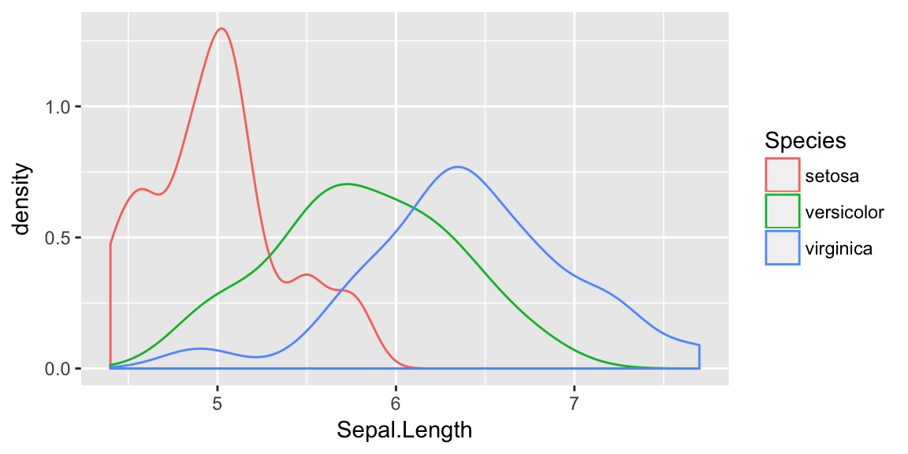

Chapter 5 Linear and Quadratic Discriminant Analysis
library(MASS) # lda function
library(dplyr) # data frame manipulations##
## Attaching package: 'dplyr'## The following object is masked from 'package:MASS':
##
## select## The following objects are masked from 'package:stats':
##
## filter, lag## The following objects are masked from 'package:base':
##
## intersect, setdiff, setequal, unionlibrary(ggplot2) # plottingIn this document we’ll walk through linear and quadratic discriminant analysis. In particular, we’ll try to make a secondary example of code to work from rather than just the books code.
First, recall the iris data set is 150 observations that measure leaf and sepal characteristics for three different species of iris. We’ll use the leaf characteristics to try to produce a classification rule.
We’ll first split this into a training data set and a test data set.
set.seed( 8675309 ) # so that the same training set is chosen every time...
iris$Obs_ID <- 1:150 # there are a couple of identical rows, we don't like that
# random select 1/2 from each species to be the training set
train <- iris %>% group_by(Species) %>% sample_n( 25 )
test <- setdiff(iris, train)ggplot(train, aes(x=Sepal.Length, color=Species)) +
geom_density()
While these certainly aren’t normal and it isn’t clear that the equal variance amongst groups is accurate, there is nothing that prevents us from assuming so and just doing LDA.
train %>% group_by(Species) %>%
summarize(xbar=mean(Sepal.Length),
sd =sd(Sepal.Length))## # A tibble: 3 x 3
## Species xbar sd
## <fctr> <dbl> <dbl>
## 1 setosa 4.988 0.3756328
## 2 versicolor 5.812 0.5027591
## 3 virginica 6.412 0.5946427We’ll predict setosa if x < (4.988 + 5.812)/2. We’ll predict virginica if x > (5.812 + 6.412)/2 We’ll predict versicolor otherwise.
# have R do this
model <- lda(Species ~ Sepal.Length, data=train)
test$yhat <- predict(model, newdata=test)$class
table( Truth=test$Species, Prediction=test$yhat )## Prediction
## Truth setosa versicolor virginica
## setosa 20 5 0
## versicolor 1 15 9
## virginica 0 4 21This is a little hard to read, but of the 25 observations that we know are setosa, 5 of them have been misclassified as versicolor. Likewise, of the 25 observations that are virginica, 22 are correctly identified as virginica while 3 are misclassified as versicolor.
Next, we will relax the assumption that the distributions have equal variance.
# have R do this
model <- qda(Species ~ Sepal.Length, data=train)
test$yhat <- predict(model, newdata=test)$class
table( Truth=test$Species, Prediction=test$yhat )## Prediction
## Truth setosa versicolor virginica
## setosa 24 1 0
## versicolor 1 15 9
## virginica 0 4 21This has improved our accuracy as 4 setosa observations that were previously misclassified are now correctly classified.
We now wish to assess how accurate our model is. That is, what percent of the test observations do we correctly classify?
mean( test$Species == test$yhat )## [1] 0.8